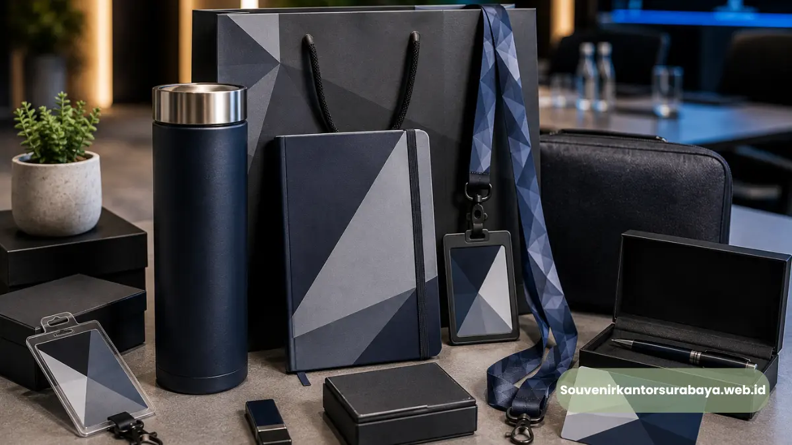

Paket seminar kit kantor Surabaya adalah satu paket perlengkapan acara yang biasanya terdiri dari lanyard, id card, notebook, pulpen, dan tas seminar, yang disiapkan sekaligus untuk memenuhi kebutuhan peserta selama seminar atau pelatihan korporat berlangsung.
Paket ini banyak dipilih panitia acara karena memudahkan proses pemesanan tanpa perlu menghubungi beberapa vendor berbeda untuk tiap item.
Kebutuhan paket seminar kit umumnya meningkat menjelang musim pelatihan kerja dan seminar tahunan perusahaan di Surabaya.
- Paket seminar kit berisi kombinasi lanyard, id card, dan aksesori acara lainnya
- Memudahkan panitia memesan seluruh kebutuhan dalam satu proses
- Isi paket dapat disesuaikan dengan anggaran dan skala acara
- Cocok untuk seminar, workshop, dan pelatihan kerja instansi
- souvenirkantorsurabaya.web.id menyediakan paket seminar kit lengkap untuk kebutuhan kantor di Surabaya
Apa Itu Paket Seminar Kit Kantor?
Paket seminar kit kantor adalah kumpulan perlengkapan acara yang disusun dalam satu paket pemesanan, mencakup item identitas peserta seperti lanyard dan id card, serta item pendukung seperti notebook, pulpen, dan tas seminar. Konsep satu paket ini dirancang agar panitia acara tidak perlu memesan setiap item secara terpisah kepada vendor yang berbeda.
Paket seminar kit umumnya dapat disesuaikan isi maupun jumlahnya berdasarkan skala acara, mulai dari pelatihan internal skala kecil hingga seminar korporat berskala besar dengan ratusan peserta.
Apa Saja Isi Paket Seminar Kit yang Umum Dipesan?
Isi paket seminar kit yang umum dipesan biasanya terdiri dari lanyard custom, id card peserta, notebook atau buku catatan, pulpen, serta tas seminar sebagai wadah seluruh perlengkapan tersebut. Beberapa perusahaan juga menambahkan item tambahan seperti tumbler atau flashdisk custom sesuai kebutuhan dan anggaran acara.
Komposisi isi paket ini dapat disesuaikan kembali sesuai preferensi panitia, misalnya dengan mengganti notebook menjadi map seminar atau menambahkan souvenir tambahan untuk pembicara dan tamu VIP.
Mengapa Memesan Seminar Kit Satu Paket Lebih Menguntungkan?
Memesan seminar kit satu paket lebih menguntungkan karena mempersingkat proses koordinasi, memastikan konsistensi desain antar item, serta umumnya lebih efisien dari sisi waktu produksi dibandingkan memesan setiap item secara terpisah ke vendor berbeda. Panitia hanya perlu berkomunikasi dengan satu vendor untuk mengatur keseluruhan kebutuhan acara.
Selain efisiensi waktu, pemesanan satu paket juga membantu menjaga keseragaman warna dan desain antara lanyard, id card, dan aksesori lainnya, sehingga tampilan acara terlihat lebih rapi dan profesional secara keseluruhan.
Baca Juga
Bagaimana Menentukan Jumlah Seminar Kit yang Dibutuhkan?
Menentukan jumlah seminar kit yang dibutuhkan dapat dilakukan dengan menghitung estimasi jumlah peserta terdaftar ditambah cadangan untuk panitia, pembicara, dan tamu undangan. Menyediakan sedikit kelebihan stok juga disarankan untuk menganticipasi peserta tambahan yang mendaftar mendekati hari acara.

Paket seminar kit komplit yang siap digunakan peserta selama sesi pelatihan dan konferensi bisnis.
Bagaimana Proses Pemesanan Paket Seminar Kit?
Proses pemesanan paket seminar kit dimulai dari konsultasi kebutuhan acara, pemilihan isi paket, penentuan desain lanyard dan id card, hingga konfirmasi jumlah dan tenggat waktu produksi. Panitia disarankan menyampaikan detail acara seperti tanggal pelaksanaan dan jumlah peserta sejak awal agar vendor dapat menyesuaikan jadwal produksi dengan tepat.
Bagi perusahaan atau instansi di Surabaya yang ingin menyiapkan seminar kit lengkap tanpa repot memesan terpisah, souvenirkantorsurabaya.web.id menyediakan paket seminar kit yang dapat disesuaikan dengan kebutuhan dan anggaran acara Anda. Pesan paket seminar kit kantor Anda sekarang melalui souvenirkantorsurabaya.web.id untuk persiapan acara yang lebih praktis.
Paket seminar kit menjadi solusi praktis bagi panitia acara kantor yang ingin menyiapkan seluruh perlengkapan seminar dalam satu proses pemesanan. Dengan isi paket yang dapat disesuaikan dan desain yang seragam, acara kantor akan terlihat lebih rapi dan profesional. Percayakan kebutuhan paket seminar kit kantor Surabaya Anda kepada souvenirkantorsurabaya.web.id.

Hawa Nadira
Tim penulis CorporateGifts ID berfokus pada strategi souvenir kantor, merchandise korporat, dan inovasi brand untuk klien B2B.
Keahlian: Branding perusahaan, produksi souvenir, paket event, desain materi promosi.
Artikel Terkait

ID Card Printing untuk Acara Kantor Surabaya
ID card printing acara kantor Surabaya adalah layanan cetak kartu identitas peserta untuk seminar, workshop, dan pelatihan.
Baca SelengkapnyaLanyard Custom untuk Seminar dan Acara Kantor Surabaya
Lanyard custom seminar kantor Surabaya adalah tali gantungan id card bercetak logo dan warna sesuai identitas perusahaan.
Baca Selengkapnya
Perlengkapan Seminar Bisnis Surabaya: Solusi Lengkap untuk Acara Kantor Anda
Perlengkapan seminar bisnis Surabaya mencakup lanyard, id card, seminar kit, dan aksesori pendukung acara kantor.
Baca Selengkapnya